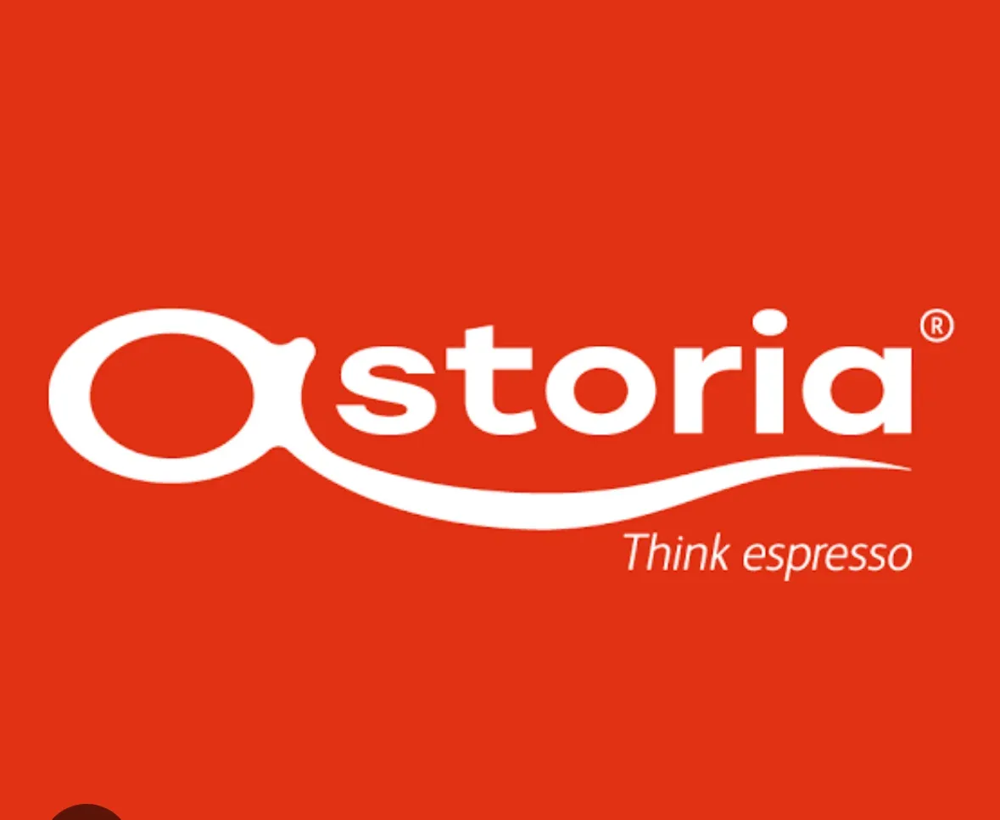

Coffee & Drinks
A coffee-first experience built around real beans and careful brewing.
Daisy’s drinks menu features selected Arabica and Robusta beans from South India, a signature blend, freshly roasted coffee and an imported Italian Astoria Espresso setup.

What you can expect
Discover Daisy Cafe & Eatery’s coffee and drinks experience in Debra, from espresso and cappuccino to cold brews, frappes, teas and shakes.
Daisy’s drinks menu features selected Arabica and Robusta beans from South India, a signature blend, freshly roasted coffee and an imported Italian Astoria Espresso setup.
The Daisy experience
Quality & freshness
Our story centres on hygiene, quality, freshness and care.
Food & coffee together
Move from espresso and cold brews to Indian, Chinese, Continental and Tandoor dishes, then finish with dessert.
Moments worth remembering
For everyday visits and celebrations, Daisy is designed as a warm neighbourhood escape.